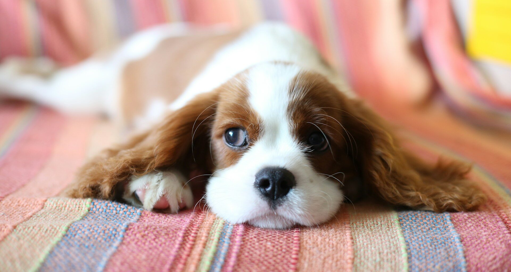
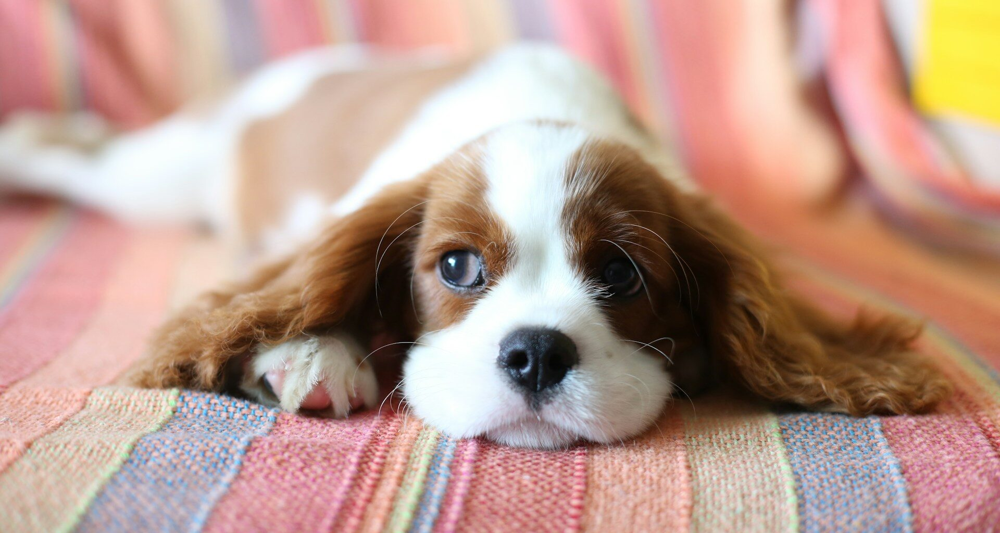
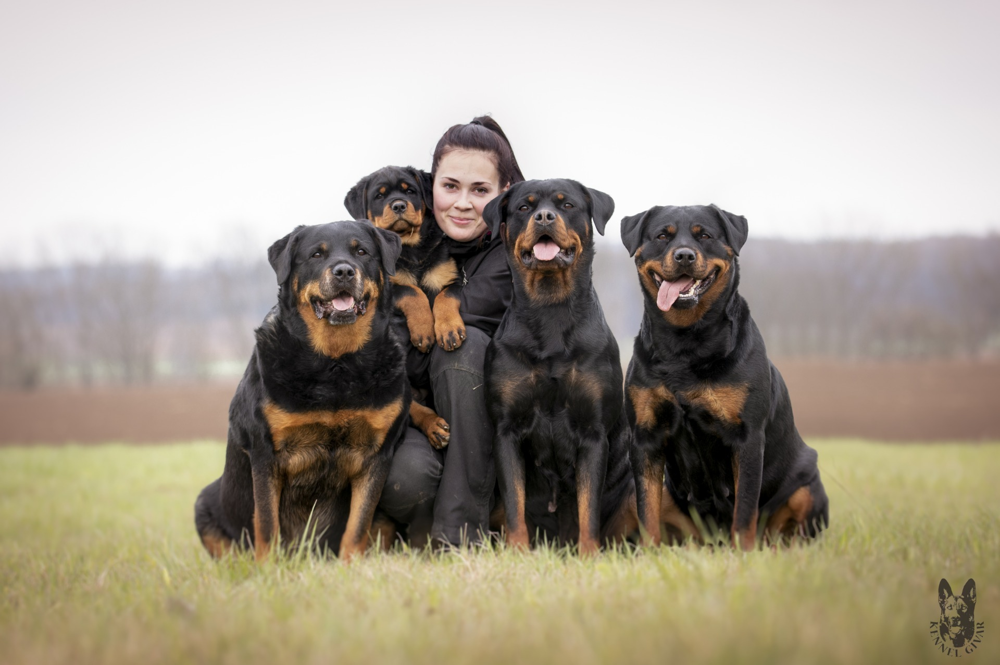
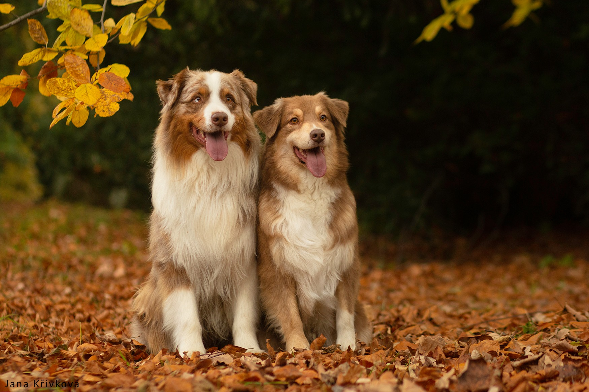
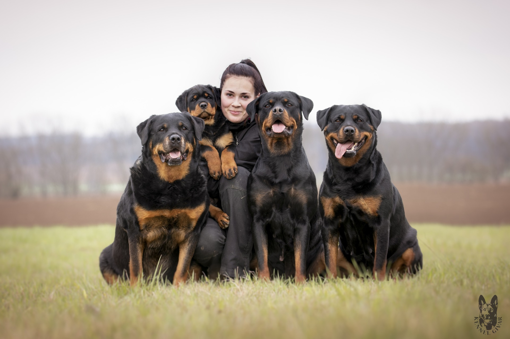
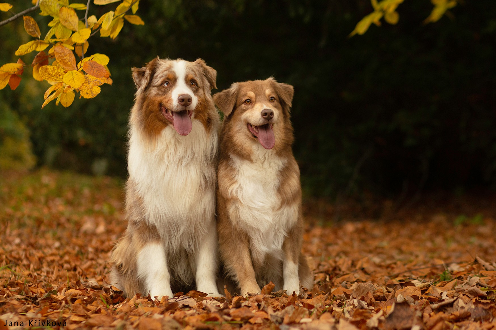

Úvod
Naše chovatelská stanice se věnuje láskyplné péči a chovu zdravých, šťastných a dobře socializovaných psů. Každé nové zvíře, které do naší chovatelny přidáme, prochází pečlivým výběrem a přísnou veterinární kontrolou. Věříme, že pes není jen domácí mazlíček, ale věrný společník a člen rodiny. Prohlédněte si naši nabídku a poznávejte naše čtyřnohé přátele, kteří čekají na své nové majitele.

Last updated 2 days ago


 

 


